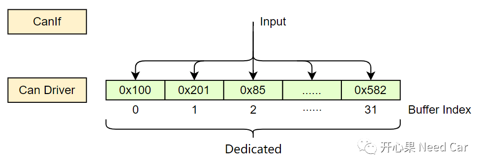
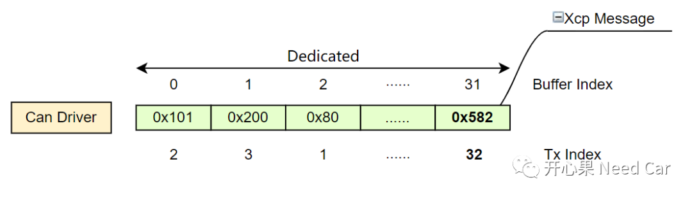
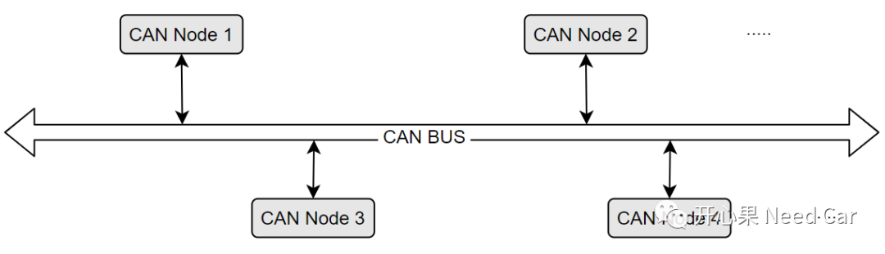
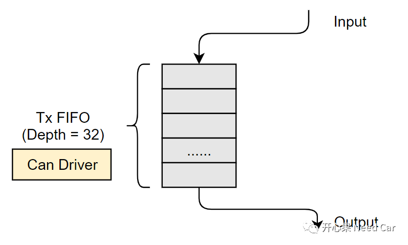
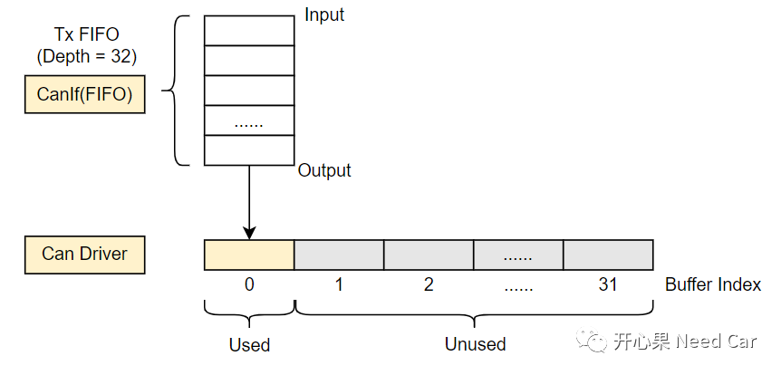
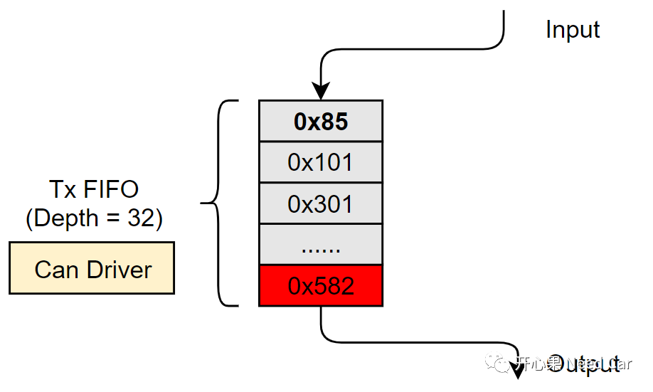
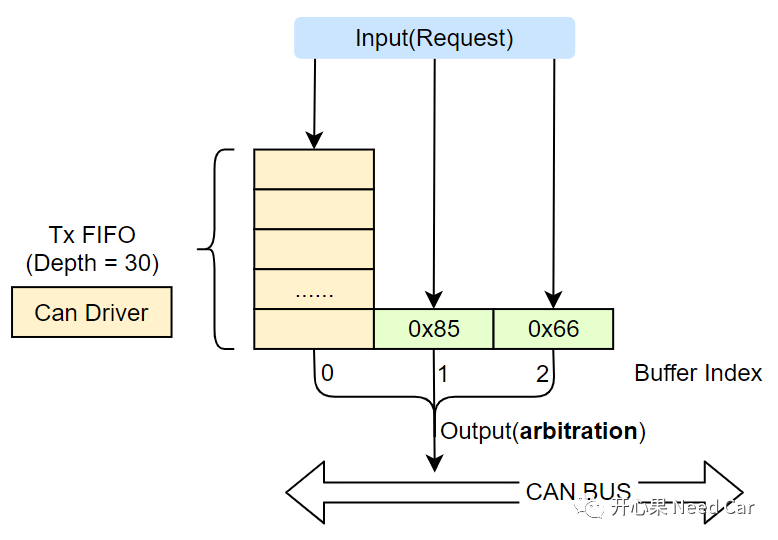
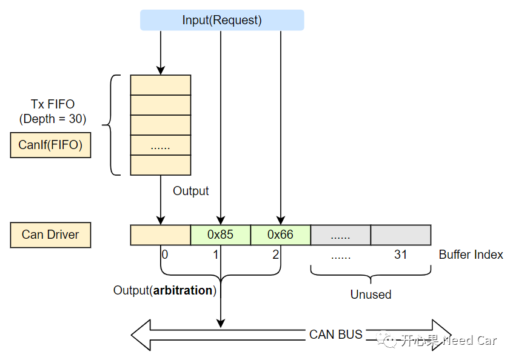

开心果 Need Car · 2022-10-05T09:17:00+08:00 · 微信原文
汽车嵌入式开发中，一般Xcp的CAN报文优先级不是很高，这个优先级不高是相对来说的。整车的通信矩阵中，一般包含如下几类报文：应用报文、诊断报文、网络管理报文、标定报文、其他报文。这些报文，做优先级设计的时候，优先级顺序如下：应用报文 ＞ 网络管理报文 ＞诊断报文 ＞标定报文。
提示："其他"类型的报文，包括一些预留报文，eg:开发阶段，信息采集用的报文。本文不讨论此类型报文。
应用报文包含车辆所需的功能信号，一般优先级比较高，即：CanID比较小；
网络管理报文主要协调网段内各节点的网络状态，优先级低于应用报文；
标定报文主要用于算法参数标定，因为标定报文最终不参与整车通信，只是标定阶段使用，因此优先级不会设置太高。标定的过程中，需要保持应用报文的通信，以此验证标定参数的功能效果。这样，标定报文不得不与应用报文竞争总线的使用权；
诊断报文主要用于车辆的诊断/升级，由于诊断过程中可以通过诊断指令（$28服务）关闭应用报文和网络管理报文，因此，进行诊断/升级时，诊断报文可以独占总线。
分析完各类报文的特点后，我们发现：标定报文（eg:Xcp报文）在标定的过程中，需要与高优先级的应用报文和网络管理报文进行内部/外部总线竞争。
1、CAN报文的内部竞争
既然有多个HOH可用，就意味着CAN Driver同时可以缓存多个要发送的CAN报文信息。eg：以tc3xx为例，每个CAN发送Node，最多可以配置32个HTH（Hardware Transmit Handle），如果将发送CAN报文配置成FULL类型，意味着每个CAN报文可以占用一个HTH，大家谁都不干扰谁，一个萝卜一个坑，比如：0x100 CAN报文，每次发送时，只选择Buffer Index = 0的HTH，此"坑"专属0x100，别的CAN报文不给用，如下所示：

这样会带来什么问题呢？假设：某一时刻，CAN Node的32个HTH全部被占满，其中，31个是高优先级的应用报文，一个低优先级的Xcp报文（eg：CanID = 0x582）。谁先被发送呢？答:按照优先级来，即：CanID越低，优先级越高。所以，Xcp报文被最后发送，在此期间，本节点又有新的应用报文请求发送，导致Xcp报文被延迟发送，如果标定数据需要高速率标定（eg:1ms），可能会因为Xcp报文数据一直没有发送出去，而导致Xcp响应数据被覆盖。如下所示：

所以，低优先级的Xcp报文，会因内部竞争被延迟。
2、CAN报文的外部竞争

不同的CAN网段，总线上的节点个数不同，发送报文的数量和时机也不尽相同。因此，外部总线竞争不可避免。怎么优化Xcp报文被阻塞的工况呢？这里给大家介绍一种处理策略。主要思路：降低内部竞争。
这个方式的特点：并行改成串行。
并行是指：多个发送报文可以选择多个HTH；
串行是指：让多个发送报文共用一个HTH。
1、硬件缓存
可以将32个HOH配置成Tx FIFO模式，如下所示：

2、软件缓存


（一）配置Can Driver方式

（二）配置CanIf方式

往期精彩回顾